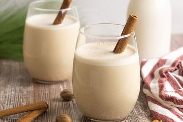

Coquito

Description
This creamy, tropical, Puerto Rican holiday drink with tons of coconut flavor will be loved by everyon at your next function!
Ingredients
- 1 (12 fluid ounce) can evaporated milk
- 2 large egg yolks, beaten
- 1 (14 ounce can cream of coconut)
- 1 (14 ounce) can sweetened condensed milk
- 1/2 cup white rum
- 1/2 cup water
- 1 teaspoon vanilla extract
- 1/2 teaspoon ground cinnamon
- 1/4 teaspoon ground cloves
Steps
- Gather all ingredients.
- Combine evaporated milk and egg yolks in the top of a double boiler over simmering water. Cook over the simmering water, stirring constantly, until mixture is thick enough to coat the back of a spoon, and reaches a temperature of 160 degrees F.
- Transfer mixture to a blender. Add cream of coconut, sweetened condensed milk, rum, water, vanilla, cinnamon, and cloves; blend until combined, about 30 seconds.
- Pour into sterilized glass bottles and store in the refrigerator; serve cold or over ice, if desired.